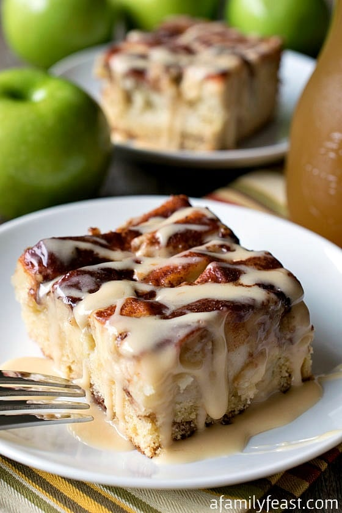

My Favorite Recipe
New England Apple Cider Cake
Ingredients
- 1 cup apple cider
- 2 cups Granny Smith apples (3 large or 4 small apples)
- 1 whole lemon
- 1/4 cup softened butter (4 tablespoons or half a stick)
- 1 cup granulated sugar
- 2 eggs
- 2 cups flour
- 1 1/2 teaspoons baking powder
- 1/2 teaspoon baking soda
- 1/4 teaspoon salt
- 1/2 cup heavy cream
- Enough vegetable shortening to grease a 9by9-inch baking pan
- 1 teaspoon cinnamon
- 3 tablespoons granulated sugar
- 1 cup apple cider
- 1 cup confectioner sugar
- 1 to 2 tablespoons heavy cream or milk
Instructions
- Place the first cup of apple cider on the stove and bring to a boil and boil until reduced to ¼ cup. Set aside to cool.
- Core and peel the apples and then cut each into 16 slices (fewer slices if using smaller apples). Have a bowl of water that has a whole lemon squeezed into it. Place apples into water and then onto a plate to dry and set aside. This will keep them from turning brown.
- Preheat oven to 350 degrees
- In the bowl of a stand mixer with paddle attachment, beat butter and sugar until well mixed.
- With the mixer running, add one egg at a time beating until smooth. Scrap sides and beat until light and fluffy, about three minutes.
- In a medium bowl, sift flour, baking powder, baking soda and salt.
- Measure out cream and add cooled reduced cider to cream.
- With the mixer on low, alternate adding the flour mixture and the cream/cider mixture until well combined. Scrape sides and mix until smooth.
- Grease a 9X9 square pan liberally with vegetable shortening and pour in the batter.
- Arrange the apples, outer edges up into the top of the batter.
- In a small bowl or cup, mix the sugar with cinnamon and sprinkle over the top of the cake and place in the oven for 50-60 minutes or until a toothpick inserted into center comes out clean.
- While the cake is baking, make the glaze.
- Place the second cup of apple cider on the stove as before only reduce down to two tablespoons. Watch it that it does not evaporate too far.
- Place the confectioners sugar in a small bowl and add the reduced cider along with one tablespoon of milk or cream and stir. Add the last tablespoon of milk or cream a little at a time until desired consistency. It should be thick but runny enough to drizzle off the end of a spoon.
- When the cake comes out of the oven, cool to room temperature and cut into nine squares.
- Drizzle the glaze over each portion letting it run down the sides and serve.